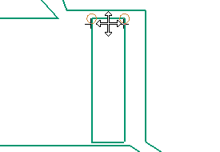
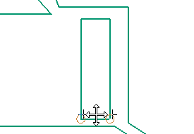

You will drag the lines at the top and bottom of the cavity to correct the thin walls.
Select the top line without selecting the line end points and drag it downward.

|
Note |
In the preceding graphic and for the following graphics, the solid and section planes are hidden to simplify the display. |
Drag the bottom line of the cavity upwards.
